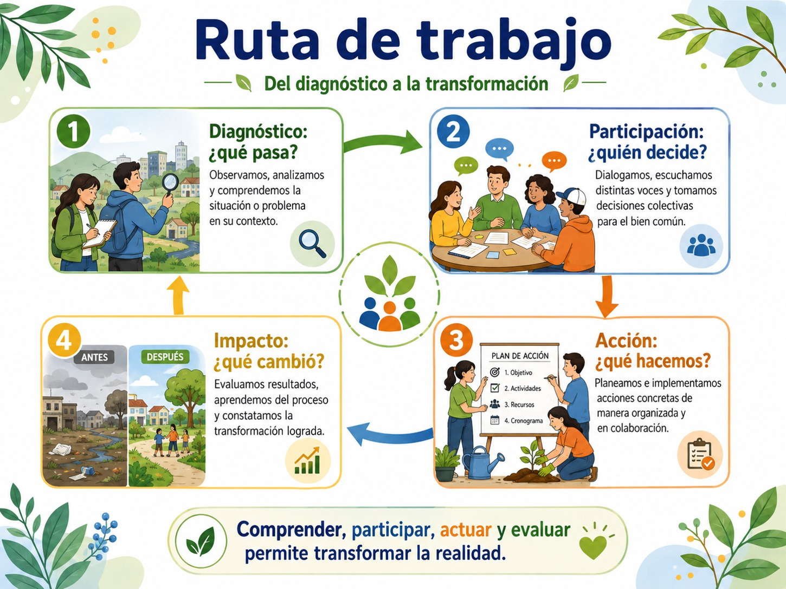

Analizar de qué manera es posible coadyuvar en la consecución de los ODS desde su comunidad, familia y universidad.
Como vimos anteriormente, una universidad sostenible no es únicamente aquella que posee áreas verdes, separa residuos o instala paneles solares. La sostenibilidad universitaria debe expresarse en cuatro dimensiones, en la formación estudiantil, en la investigación, en la vinculación y en la gestión. Y esta concepción se relaciona directamente con la RSU porque exige observar tanto lo que la universidad enseña como los impactos que produce mediante su funcionamiento.
Formación de estudiantes con ciudadanía crítica y capacidades para actuar. Una universidad sostenible necesita formar personas capaces de comprender problemas complejos, cuestionar sus causas estructurales, dialogar con otros saberes, actuar responsablemente y evaluar los impactos de sus decisiones. Así, la sostenibilidad se convierte entonces en una competencia para comprender, decidir y actuar.
Investigación para generar conocimiento pertinente y socialmente útil. Una universidad sostenible investiga problemas que resultan relevantes para su territorio. Por ejemplo, quienes asisten a la universidad pueden estudiar los temas del agua, movilidad, salud, desigualdades, vivienda, energía, violencia, alimentación, biodiversidad o condiciones educativas, pero la investigación sostenible debe además preguntarse ¿qué problema estamos resolviendo?, ¿para quién producimos el conocimiento?, ¿participan las comunidades?, ¿los resultados regresan al territorio? El conocimiento adquiere así pertinencia social.
Vinculación para generar alianzas horizontales con el territorio. Desde la universidad la comunidad no debe considerarse objeto de estudio, sino aliada y productora de conocimiento. Cuando se crean alianzas podemos territorializar, pues ésta significa escuchar, mapear y actuar. Para ello es particularmente útil pensar en cuatro pasos:
- • Diagnóstico: ¿qué pasa?
- • Participación: ¿quién decide?
- • Acción: ¿qué hacemos?
- • Impacto: ¿qué cambió?
El siguiente diagrama te explica estos pasos:

Esta secuencia transforma la vinculación universitaria pues no se trata de una relación vertical entre la universidad y la comunidad sino una relación horizontal de cooperación y de diálogo de saberes colocando en relación ciencia académica, saberes territoriales y la construcción de puentes entre ambos.
Finalmente, la última dimensión de la sostenibilidad de la universidad la podemos llevar a cabo desde la Gestión para hacer coherente la relación entre valores y prácticas pues la propia universidad debe aplicar los principios que enseña. Esto significa revisar el consumo de agua y energía, la generación de residuos, la movilidad, la accesibilidad, la inclusión, la igualdad, el bienestar, las condiciones laborales, las compras, la infraestructura y las formas de participación. Algunos ejemplos concretos de coherencia pueden ser la atención a salud mental y actividad física de los miembros de la comunidad universitaria; las tutorías e inclusión; la prevención de la violencia y el liderazgo de mujeres; la gestión de agua y huella ambiental; eliminación de barreras para estudiantes en desventaja; y promoción de cultura de paz y alianzas.
En el siguiente diagrama puedes observar la relación entre la sostenibilidad de la universidad con los ODS en específico:

La sostenibilidad también se aprende y se puede practicar en casa con la familia
La eticidad de la sostenibilidad también la podemos trasladar al ámbito familiar a través de la directriz de los ODS. Para ello primero debemos pensar que la propia familia es un primer espacio de cuidado, consumo y convivencia. Y es por ello que, en y desde este espacio social podemos llevar a cabo acciones cotidianas como cuidar la salud física y mental, distribuir las tareas de cuidado, reducir desperdicios y residuos, ahorrar agua y energía, dialogar sin violencia y valorar la cultura y el territorio. Estas prácticas permiten comprender algo fundamental:
Los ODS no comienzan únicamente en organismos internacionales o gobiernos; también se construyen mediante prácticas cotidianas.
Sin embargo, como hemos aprendido anteriormente, esto no significa trasladar toda la responsabilidad a las familias. Las acciones personales y familiares son importantes, pero se desarrollan dentro de sistemas económicos, infraestructuras, mercados y políticas públicas que pueden facilitar o dificultar comportamientos sostenibles. Por ello este esfuerzo desde lo familiar se debe sumar a otros esfuerzos como podemos ver en el gráfico:

Finalmente, debemos ver de qué manera es posible coadyuvar en la consecución de los ODS desde tu comunidad, familia y la universidad. Este último paso de este bloque consiste en pasar de la comprensión a la acción, pasar de la pregunta sobre qué son los ODS a qué puedo transformar desde el lugar que habito. Para ello es importante que consideremos nuestros espacios cotidianos como la casa, la universidad, la comunidad y el territorio para la acción, como podemos ver en la siguiente tabla:

Finalmente, te proponemos que lleves a cabo una breve actividad individual o en equipo en clase:

En síntesis, desde la perspectiva de la RSU, el desarrollo sostenible se construye cuando somos capaces de conectar los grandes desafíos globales con las prácticas concretas de nuestra vida personal, familiar, universitaria y comunitaria, preguntándonos siempre qué derechos están en juego, quiénes enfrentan mayores barreras, qué responsabilidad nos corresponde y qué podemos transformar colectivamente.
- Independent Expert Group on the Universities and the 2030 Agenda (2022). UNESCO. https://doi.org/10.54675/YBTV1653
- Khan et al. (2022). Journal of Open Innovation. https://doi.org/10.3390/joitmc8010049
- Navarro-Espinosa et al. (2022). IJERPH. https://doi.org/10.3390/ijerph19052599
- Prieto-Jiménez et al. (2021). Sustainability. https://doi.org/10.3390/su13042126
- UNESCO (2020). Educación para el desarrollo sostenible: hoja de ruta.
- UNESCO IESALC (2024). Informe anual 2023.
- United Nations (2025). The Sustainable Development Goals Report 2025.
Te proponemos que te apoyes con los siguientes videos: